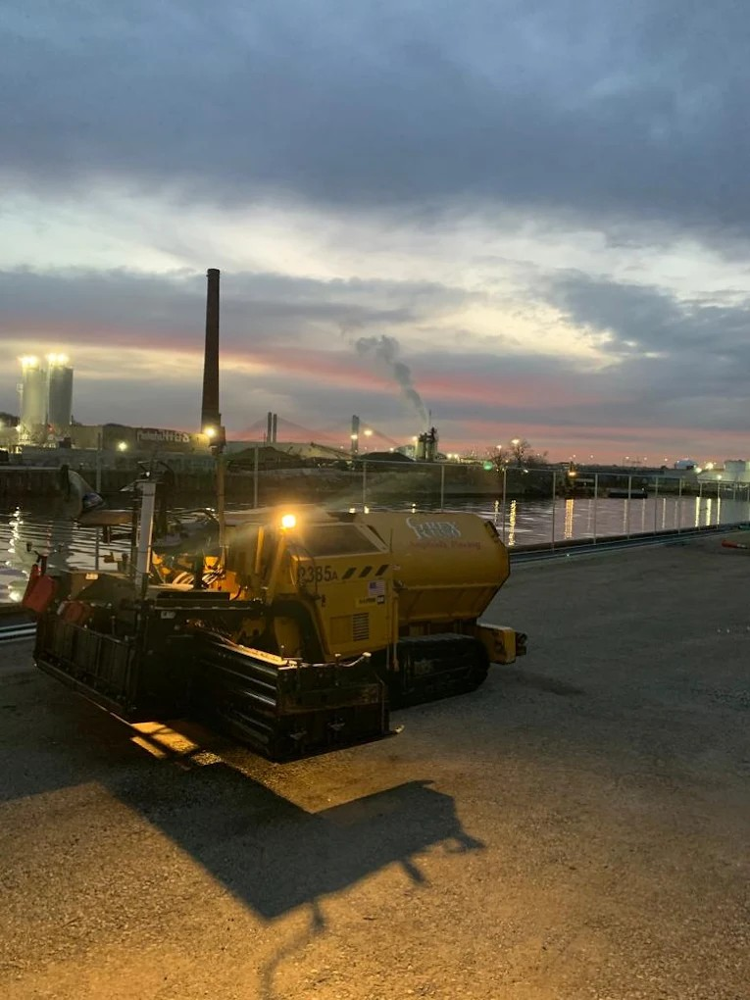

Why College Point Property Owners Trust Grey Ruso for Paving Projects
Grey Ruso - Asphalt, Paving & Construction has operated from its College Point base since 1987, making it one of the longest-established paving contractors in Queens County. Founded as a family-owned operation, the company has spent nearly four decades building its reputation one commercial project at a time — schools, hospitals, corporate campuses, warehouses, and municipal facilities across Queens, the five boroughs, Long Island, and Westchester. That depth of experience shows up in every estimate, every mix design, and every post-project drainage review. Grey Ruso at 20-48 130th St, College Point, NY 11356, or call 718-358-1836 today.

What Should First-Time Property Owners Look for in a Paving Contractor?
First-time property owners often underestimate how much variation exists between paving contractors in the College Point area. Licensing, bonding, and insurance are the baseline requirements — any contractor working on commercial property in New York must carry adequate general liability and workers' compensation coverage. Beyond credentials, look for a track record on similar project types. A contractor experienced in parking lot paving services for commercial complexes will approach drainage, base preparation, and line striping differently than one focused primarily on residential driveways. Ask for references from comparable projects in Queens or nearby Nassau County, and request a written scope of work before any contract is signed.
How Do You Evaluate Asphalt Paving Quotes in College Point?
Comparing quotes from asphalt paving contractors in College Point requires understanding what's actually included. A low number on a proposal may reflect thinner asphalt layers, less thorough base preparation, or exclusion of drainage corrections — all of which cost more to fix later than to do correctly the first time. Review the specification sheet: What is the thickness of the binder course? What is the compaction standard? Does the quote include saw-cutting of the existing perimeter, tack coat application, and final sealing? Grey Ruso has built its reputation by delivering complete, transparent scopes rather than low-ball introductory figures. You can verify their standing and client reviews at their Commercial asphalt paving listing.

What Paving Services Do Commercial Property Owners in College Point Need Most?
Commercial asphalt paving in College Point spans a wider range of services than most first-time property owners realize. New lot construction starts with subgrade preparation, base compaction, and precise grading for stormwater runoff — all before a single layer of asphalt is applied. Asphalt pavement repairs address the deterioration that accumulates year after year: pothole filling, crack sealing, infrared patching, and milling of failed sections. Concrete work covers curbing, aprons, sidewalk panels, and ADA-compliant access paths. Drainage systems design and installation prevent the subsurface erosion that accelerates pavement failure in low-lying areas of Queens. Paver installation adds an aesthetic dimension to entrance plazas and high-visibility areas. Grey Ruso offers all of these services under one contract, which simplifies project management and accountability. For an overview of their commercial project history, see their Asphalt paving contractor profile.
Which Neighborhoods Near College Point Do Paving Contractors Typically Serve?
Property owners in Whitestone, Flushing, Bayside, Murray Hill, and Malba regularly work with College Point-based paving contractors because of their geographic proximity and shared infrastructure challenges. The paving contractor Grey Ruso serves clients throughout Queens County and beyond — from the dense commercial zones near Flushing's Main Street corridor to the industrial properties off Northern Boulevard in the Murray Hill section. Contractors who operate across multiple neighborhoods bring cross-project knowledge: what drainage configurations work under the clay-heavy soils common in eastern Queens, how frost depth requirements change from one microclimate to the next. That regional experience is a concrete advantage when evaluating proposals. Check out client feedback through the Parking lot paving services review page.
How Long Does a Commercial Paving Project Take in College Point?
Project timelines for commercial asphalt paving in College Point vary based on lot size, condition of the existing base, weather windows, and the scope of drainage or concrete work required. A straightforward parking lot resurfacing on an already-stable base might be completed in one to two days of paving once materials are on site. A full reconstruction — milling, subgrade repair, drainage system installation, base compaction, binder course, and top course — on a larger corporate or municipal property may span several weeks. Grey Ruso coordinates multi-phase projects to minimize downtime for businesses operating on the property during construction. Learn more about asphalt problem diagnosis in College Point. For scheduling information and a project timeline estimate, Asphalt paving company near me can help you find the business quickly online.